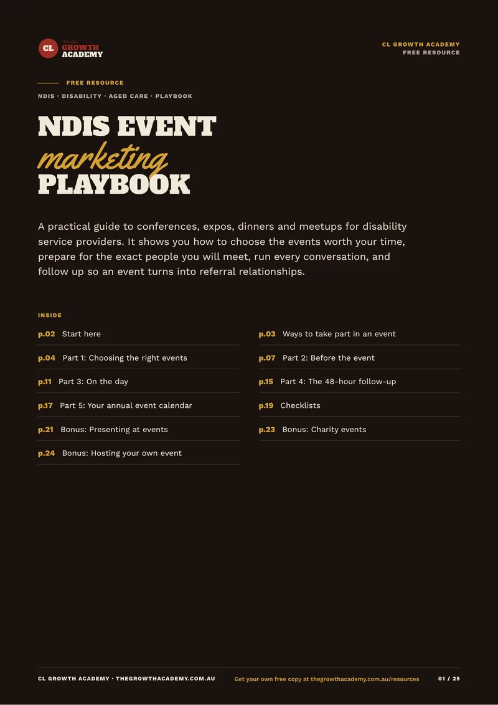

NDIS Expo and Event Marketing Playbook: Choose, Prepare, Follow Up
The NDIS Event Marketing Playbook is a 25-page guide to expos, conferences, dinners and meetups for disability service providers. It shows you how to score an event before you book, prepare for the exact people who will be there, run every conversation, and follow up within 48 hours so the event turns into referral relationships.

Which events are worth an NDIS provider's time?
The ones the people who refer to your service type go to. Before you look at any event, confirm who makes referral decisions for your service, then go where they gather.
| Provider type | Who refers | Where they tend to gather |
|---|---|---|
| Complex care and SIL | Hospital discharge planners, OTs, support coordinators | Rehab conferences, ABI and SCI forums, support coordinator network events |
| SDA | SIL providers, support coordinators, NDIS planners | Housing forums, SDA developer events, support coordinator networks |
| Community access | Support coordinators, LACs, families | Support coordinator breakfasts, NDIS information sessions, school-leaver forums |
| Early childhood intervention | Paediatricians, maternal and child health nurses, kindergartens, GPs | Early childhood intervention practitioner events, child health networks |
| Plan management | Participants, families, LACs, support coordinators | NDIS expos, support coordinator network events |
| STA and respite | Families, support coordinators, carer support networks | Carer advocacy events, disability family forums |
The playbook covers ten service types, including allied health, behaviour support, employment support and day programs.
Are large disability expos worth it?
It depends on where your referrals come from. If they come mainly from consumers, as they often do for plan management, STA, respite and community access, a stand at a large disability expo builds awareness with families and Participants. If they come mainly from professionals, a large expo is an expensive way to have a lot of conversations that go nowhere. In that case, send one person as a visitor with a target list and a time limit, and put the budget into a niche event.
How do I decide whether to book an event?
Answer four questions, then score it.
- Who specifically will be there? Name the person. "OTs working complex caseloads in South-East Queensland" beats "allied health professionals".
- Is that person the actual referral decision-maker?
- What is the one goal for this event? Lead volume, one strategic partnership, authority with a niche, or intelligence gathering. Pick one.
- How will you take part? Presenting, attending, exhibiting, hosting or buying a table.
Then score the event from 1 to 5 on audience match, decision-maker presence, niche fit, competitive gap and timing. 20 to 25 is usually worth full investment, 15 to 19 is worth selective investment, and below 15 means attend as a visitor at most, or skip it. After the event, score it again. The gap between the two scores is how you get better at choosing.
As I said to a provider's business development manager recently: "The event is the mechanism, but it's about who do I really need there?"
What should I prepare before an event?
A persona brief, two weeks out, before anyone designs a banner. One brief per type of person you want to meet:
- Who are they? Job title, practice setting, caseload type.
- What is their main frustration with providers like you, the one they complain about after a long day?
- What do they hear from providers all the time? Those are the phrases to avoid.
- What would make them stop and think "this is different"?
- What do they need to do their job better?
The brief then becomes your banner. One example from the playbook: a support coordinator tired of providers who say yes on the phone and pull out on day two. The banner that lands for an STA provider is "We ask about the PBS plan before we ask about availability." The test for every banner: could any other provider at the event put the same line on theirs? If yes, go back to the brief.
What do I do on the day?
Set one ask before you walk in, such as booking a coffee or call with at least three specific people. Then run every conversation with a professional in five steps, and don't pitch until step 3.
- Open with a question about their practice. Your organisation's name can wait.
- Listen for the specific frustration, and note their exact words.
- Bridge to your specialist credential.
- Show the mechanism: the actual thing you do, such as what a weekly update to an OT looks like.
- Offer one easy next step.
Before you leave, connect on LinkedIn with a note about something you discussed, agree the next contact, and count your one ask.
NDIS expo exhibitor tips
Short answer: book a stand only when the people who refer to you will be there. Name the one person you want to meet, write your banner for them, set one ask for the day, open every conversation with a question about their work, and follow up within 48 hours. The playbook's checklists cover the rest.
Ten tips from the playbook for anyone running a stand at an NDIS or disability expo:
- Exhibit at a large disability expo when your referrals come mainly from families and Participants. If professionals refer to you, send one person as a visitor with a target list and a time limit.
- Before you book, ask the organiser for last year's delegate profile or exhibitor list, so you know who will be there.
- Fill in a persona brief two weeks out, then write the hook before anyone designs the banner.
- Test every banner line: could any other provider at the event put the same line on theirs? If yes, rewrite it.
- Bring one authority leave-behind, such as a clinical guide, a methodology overview or a set of case studies, in place of a service menu.
- Point every QR code to a page made for that persona, and test it on three devices before the day.
- Warm up the top five people on the attendee or exhibitor list on LinkedIn first: 3 likes, 2 comments, then 1 connection request.
- Set one ask for the day, such as booking a coffee with three specific people, and brief everyone on the stand.
- Open every conversation with a question about their practice, and leave your organisation's name until they have spoken.
- Get written consent for every Participant photo, quote or story on your stand, and never describe your service as "NDIS approved".
Where can I find disability expos to exhibit at?
The organisers below run disability expo series across Australia and keep their own calendars of upcoming dates, venues and exhibitor bookings. Check the dates with the organiser, then score each expo with the playbook's scoring sheet before you book a stand.
- ImpactInstitute, My Future, My Choice Disability Expos: disability expos calendar (opens in a new tab) and exhibitor bookings (opens in a new tab)
- Disability Expo Australia: upcoming expos (opens in a new tab)
What is the 48-hour follow-up?
A day-by-day plan so warm conversations don't go cold.
| When | What to do |
|---|---|
| Day 0, evening | Sort contacts into high-intent professionals, strategic partners, and families or Participants. Flag three to five people to call tomorrow. |
| Day 1 | Send a personalised LinkedIn message to every professional you met, mentioning a detail from the conversation. Call the top three high-intent referrers. |
| Day 2 | Email anyone you haven't reached. Book discovery calls with everyone who showed interest. Send families a short message with one relevant resource. |
| Days 3 to 5 | Enter every contact in your CRM with their role, the topic they raised, a persona tag, the next action, an owner and a date. |
The detail that makes follow-up work: remember one thing about each person, "the one thing that makes the follow-up email go from generic to tailored."
Events are one part of a referral pipeline. If you want the whole system built, see how I help with NDIS referral marketing.
What else is in the playbook?
- Ways to take part, with what each one usually delivers, from presenting at a niche conference to hosting your own meetup.
- An asset audit for banners, brochures, discovery questions and QR codes.
- Discovery questions for support coordinators, OTs, discharge planners, GPs, families and schools.
- One-minute pitch examples for eight service types, plus a fill-in template.
- An event contact tracker and an annual event calendar.
- Printable pre-event, on-the-day and after-event checklists.
- Bonus guides on presenting at events, charity events and hosting your own event.
- Compliance notes: written consent for every Participant photo, quote or story, never "NDIS approved", and sign-up forms that ask about needs rather than funding.
How do I use the playbook?
- Score every event with the scoring sheet before you commit budget.
- Fill in the persona brief two weeks out.
- Print the checklists for the team.
- Run the 48-hour follow-up after every event, then score the event again.
Who is the playbook for?
Owners, business development managers, intake teams and marketing staff at NDIS, disability and aged care providers who go to expos, conferences, breakfasts and dinners, or want to host their own. If you want your team trained on it, I run workshops for provider teams, in person or online.
Get the NDIS Event Marketing Playbook free
You get the 25-page playbook as a PDF, plus every other resource in the library.
FAQ
How far ahead should I plan events?
Six to twelve months. That gives you time to secure speaker slots, budget properly and line events up with your referral pipeline and capacity. The playbook includes an annual event calendar to plan it.
Should I exhibit at a disability expo or just attend?
Exhibit if your referrals come mainly from families and Participants and the audience matches. If professionals refer to you, attend as a visitor with a target list, or put the budget into a niche event or a speaker slot.
What should I do in the first 48 hours after an event?
Sort your contacts that evening, message every professional on LinkedIn and call your top three on day 1, email the rest and book calls on day 2, and get everyone into your CRM by day 5.
Is it only for NDIS providers?
It is written for NDIS and disability providers, with examples for ten service types. The scoring, preparation and follow-up steps work the same way for aged care providers.
Can you help us plan our events?
Yes. Book a free growth audit and I'll look at the events you go to and help you choose where to spend your time.
Sources
Public sources this page relies on, each checked 15 November 2026:
- ImpactInstitute, My Future, My Choice Disability Expos: https://www.impactinstitute.com.au/disability-expos/ (opens in a new tab)
- ImpactInstitute, exhibitor opportunities: https://www.impactinstitute.com.au/sponsors-exhibitors/ (opens in a new tab)
- Disability Expo Australia, upcoming expos: https://www.disabilityexpo.com.au/expos (opens in a new tab)
- NDIA, NDIS logo guidelines (no use of the NDIS logo without the NDIA's written consent): https://www.ndis.gov.au/contact/feedback-and-enquiries/ndis-logo-guidelines (opens in a new tab)
Want help turning events into referrals?
Book a free growth audit. I'll go through your business with you and pick the first three moves, then you decide whether you want help running them.